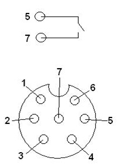

[513]Knorr KB3TA fault code reading
An LED on the ECU shows status and fault codes in the system

The LED is not on: No power to the ECU.
LED on with green light: The ECU has power. No active fault codes.
LED flashes red: The ECU has power. There are active fault codes in the system, flashes show in which component the fault is active.
LED on with red light: The ECU is defective.
Flash codes are generated by bridging pin 5 and 7 in the diagnostics socket.

To generate fault codes
- Bridge pin 5 and 7 for 2 seconds.
- Remove bridging.
- Bridge pin 5 and 7 for 2 seconds.
- Remove bridging.
- The green LED flashes to show configuration (see fault code list).
- LED turns off for 5 seconds.
- The red LED flashes to show the defective component, (see fault code list).
- LED turns off for 2 seconds.
- The yellow LED flashes to show type of fault in the component (see fault code list).
- LED turns off for 5 seconds.
- If several fault codes are stored in the system the flash sequence starts over.
| Configuration | Defective component | Type of fault | |
| Flash pulses | Green | Red | Yellow |
| 1 | |||
| 2 | 2S/2M | Sensor left 1 | Open circuit |
| 3 | 4S/4M | Sensor left 2 | Short-circuiting |
| 4 | Sensor right 1 | Short-circuiting to battery | |
| 5 | 4S/3M | Sensor right 2 | Dynamic sensor failure |
| 6 | Sensor left axle | ||
| 7 | Sensor right axle | ||
| 8 | Modulator left | ||
| 9 | Modulator right | ||
| 10 | Modulator axle | ||
| 11 | Power supply | 2-for low, 3- For high, 4- Open circuit (ground) | |
| 12 | Continuous brake | ||
| 13 | |||
| 14 | |||
| 15 | Internal error/System failure |
After the fault has been solved, the fault codes must be erased using the following procedure.
- Bridge pin 5 and 7 for 2 seconds.
- Remove bridging.
- Bridge pin 5 and 7 for 2 seconds.
- Remove bridging.
- Bridge pin 5 and 7 for 2 seconds.
- Remove bridging.
- LED flashes red for 3 seconds.
- LED flashes red/green for 3 seconds, bridge pin 5 and 7 for 1 second during this phase.
- LED turns off for 1 second.
- LED flashes yellow for 2 seconds.
- fault codes have been erased.